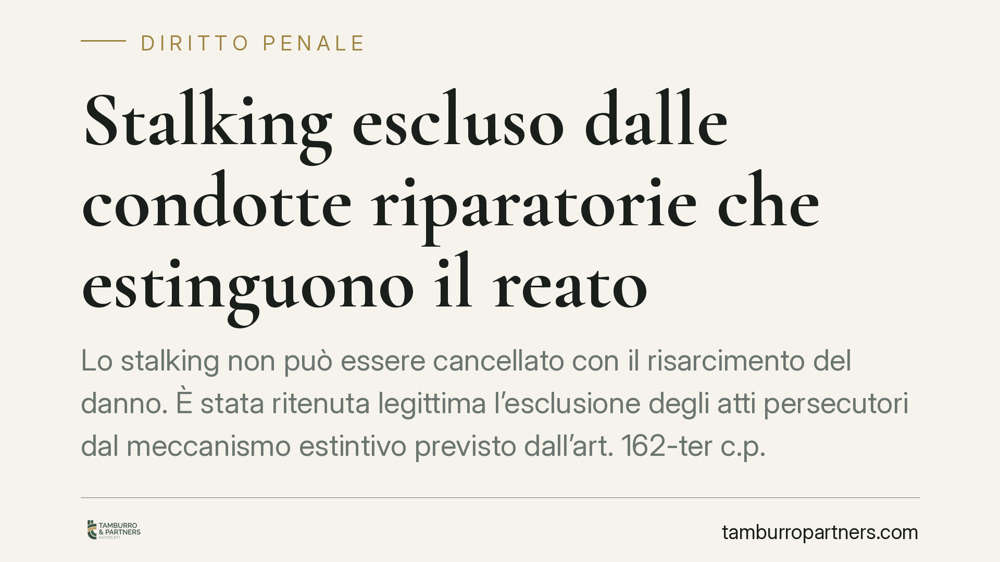

Stalking escluso dalle condotte riparatorie che estinguono il reato
Lo stalking non può essere cancellato con il risarcimento del danno. È stata ritenuta legittima l'esclusione degli atti persecutori dal meccanismo estintivo previsto dall'art. 162-ter c.p. La condotta riparatoria conserva rilievo solo come attenuante. Una scelta che pesa sulle strategie difensive e sulle aspettative delle persone offese, e che merita di essere letta con precisione.

Il caso
Il tema è la portata dell'art. 162-ter del codice penale, la norma che consente l'estinzione del reato quando l'imputato ripara integralmente il danno prima del dibattimento. La questione: questo meccanismo si applica anche allo stalking (atti persecutori, art. 612-bis c.p.)? La risposta è no. L'esclusione dello stalking dall'ambito applicativo dell'estinzione per condotte riparatorie è stata ritenuta legittima.
È una conferma che orienta la prassi. Chi commette atti persecutori non può ottenere la cancellazione del reato pagando una somma alla persona offesa. Il risarcimento resta rilevante, ma su un piano diverso.
Inquadramento normativo
L'art. 162-ter c.p. prevede l'estinzione del reato quando l'imputato, entro l'apertura del dibattimento di primo grado, ripara interamente il danno mediante restituzioni o risarcimento ed elimina le conseguenze dannose o pericolose del reato. Si tratta di una causa estintiva applicabile ai soli reati procedibili a querela soggetta a remissione.
�È proprio qui che lo stalking resta fuori. La stessa disposizione esclude espressamente dal proprio ambito i casi previsti dall'art. 612-bis c.p. La ratio dell'esclusione è sostanziale: l'offesa che caratterizza gli atti persecutori colpisce la libertà morale e la serenità della vittima, un bene non monetizzabile. Consentire l'estinzione tramite pagamento significherebbe trasformare una condotta che genera perdurante stato d'ansia, timore per l'incolumità o alterazione delle abitudini di vita in una posta economica negoziabile. Il legislatore ha ritenuto questo esito incompatibile con la natura del reato.
Va ricordato, per completezza, che l'art. 612-bis c.p. è stato più volte modificato: nella formulazione vigente la procedibilità è a querela, ma la remissione è ammessa solo in forma processuale in determinate ipotesi, mentre in altri casi si procede d'ufficio (ad esempio quando il fatto è connesso ad altro delitto procedibile d'ufficio o quando la persona offesa è minore o disabile). Il regime di procedibilità e quello dell'estinzione vanno quindi letti congiuntamente e caso per caso.
Implicazioni pratiche
Per l'imputato il messaggio è netto: la riparazione del danno non chiude il procedimento. Chi confidava nel risarcimento come via d'uscita deve rivedere l'aspettativa. Questo non svuota di senso la condotta riparatoria, che conserva valore importante ma diverso.
La distinzione è cruciale. L'estinzione ex art. 162-ter (preclusa per lo stalking) fa venir meno il reato. La riparazione del danno, invece, resta pienamente valutabile come circostanza attenuante ex art. 62 n. 6 c.p. e nella commisurazione della pena ex art. 133 c.p. In altri termini: il risarcimento non cancella l'accusa, ma può incidere in modo concreto sull'esito sanzionatorio.
Per la persona offesa la conferma dell'esclusione rafforza la tutela. La scelta sulla querela e sulla sua eventuale remissione va ponderata con consapevolezza del quadro normativo, tenendo presente che in diverse ipotesi il procedimento prosegue a prescindere dalla volontà della vittima.
Cosa fare in concreto
- Verifica il regime di procedibilità applicabile. Prima di ogni valutazione, accerta se il caso concreto ricade tra le ipotesi procedibili a querela remissibile o tra quelle d'ufficio: cambia l'intera strategia.
- Non confondere estinzione e attenuante. È opportuno considerare la riparazione del danno per il suo effetto reale, ossia l'incidenza sulla pena, senza attendersi la chiusura del procedimento.
- Documenta ogni attività riparatoria. Restituzioni, risarcimenti ed eliminazione delle conseguenze vanno tracciati con prove certe, utili in sede di commisurazione.
- Valuta i tempi processuali. Le condotte riparatorie hanno rilievo tanto maggiore quanto più tempestive: è utile inquadrarle rispetto alle fasi del procedimento.
- Affronta con cautela la scelta sulla querela. Per la persona offesa, la decisione su presentazione ed eventuale remissione merita una lettura informata del quadro normativo e degli effetti concreti.
La linea di fondo è coerente: alcuni beni giuridici non si prestano a una logica di scambio. Lo stalking, per la sua incidenza sulla libertà e sulla sicurezza della vittima, rientra tra questi.
Contributo informativo a cura di Tamburro & Partners Avvocati. Non costituisce parere legale.
Ogni condominio ha una storia a sé.
Se gestisci un'amministrazione e vuoi un confronto su una specifica questione condominiale, scrivi allo studio. Ti rispondiamo entro un giorno lavorativo.